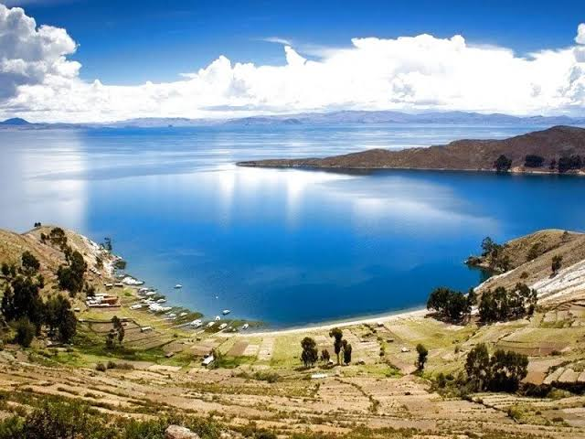
Huacachina
Un oasis en medio del desierto rodeado de dunas, ideal
para paseos en buggy, sandboard y disfrutar del atardecer
en el desierto peruano.
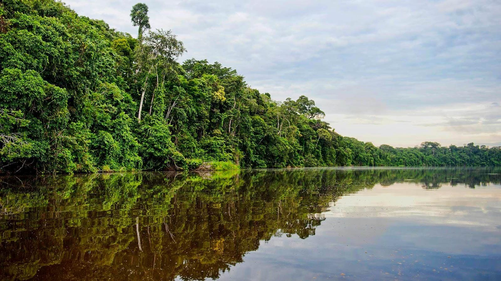
Pacaya Samiria
Una de las áreas protegidas más grandes del Perú, conocida
por su increíble biodiversidad, ríos espejados y experiencias
únicas en la Amazonía.
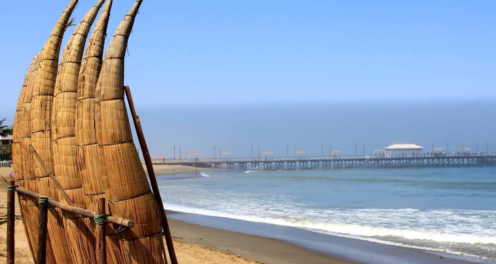
Catarata de Ahuashiyacu
Ubicada a pocos minutos de la ciudad, esta catarata ofrece
un entorno natural perfecto para refrescarse y relajarse entre
la selva.
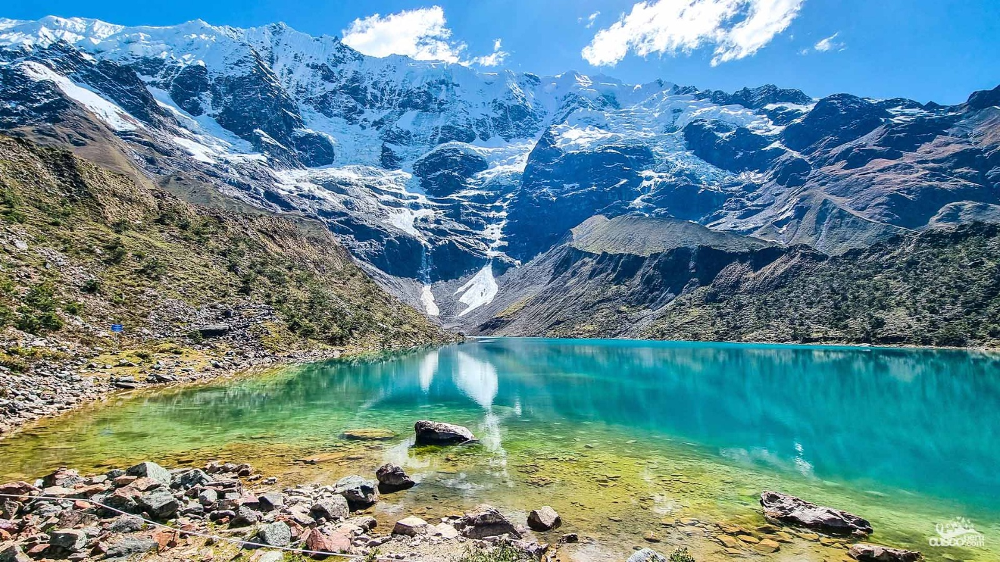
Laguna 69
Ubicada en el Parque Nacional Huascarán, esta laguna de aguas
turquesas es un destino ideal para los amantes del trekking y
la naturaleza de altura.
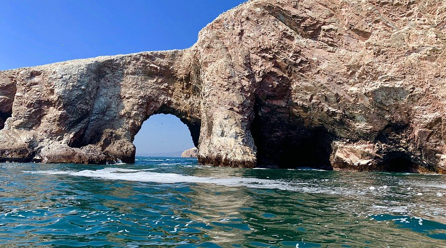
Islas Ballestas
Un grupo de islas rocosas frente a la costa de Paracas, hogar
de una gran variedad de fauna marina como lobos marinos, pingüinos
de Humboldt y aves guaneras. El paseo en bote permite acercarse sin
perturbar el ecosistema.
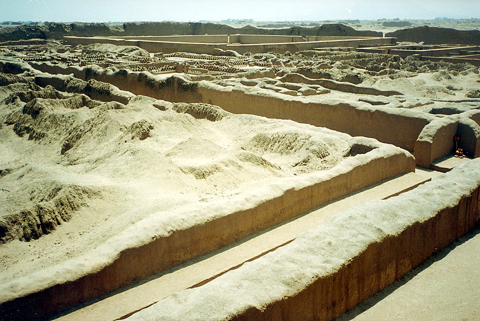
Chan Chan
Antigua capital del reino Chimú, considerada la ciudad de adobe más
grande de América. Sus muros grabados con relieves muestran la riqueza
cultural de esta civilización preincaica.
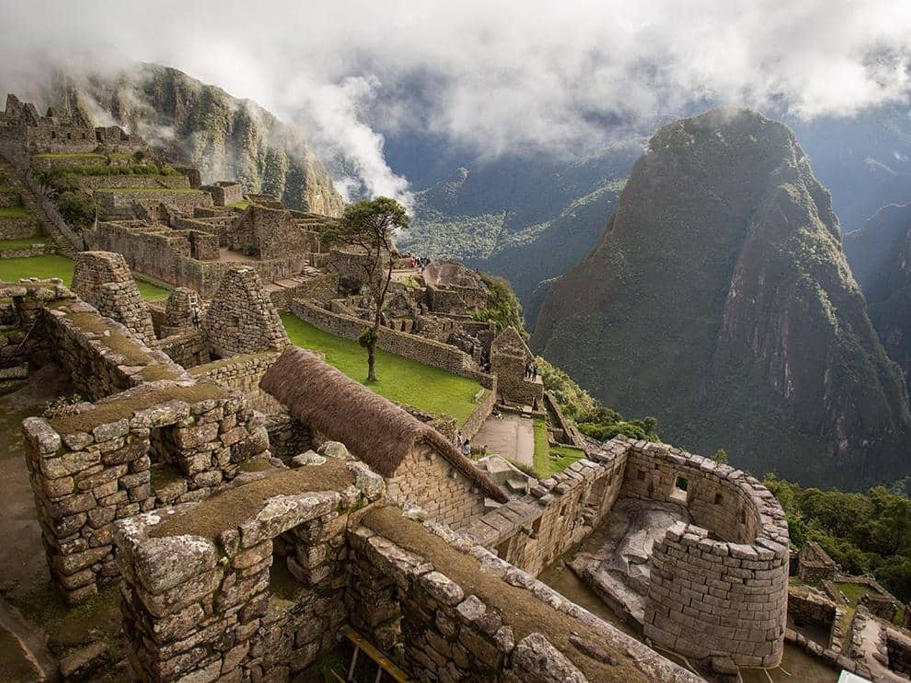
Machu Picchu
Una de las siete maravillas del mundo moderno. Esta ciudadela inca
enclavada entre montañas ofrece un viaje al pasado y una conexión espiritual
con la naturaleza. Ideal para caminatas y fotografía.

Cañón del Colca
Con más de 3,400 metros de profundidad, es uno de los cañones más profundos
del mundo. Desde el mirador de la Cruz del Cóndor se pueden ver estas majestuosas
aves surcar el cielo.

Mirador de los Andes
Ubicado a más de 4,900 msnm, este mirador ofrece una vista panorámica de los volcanes
más importantes del sur peruano. Es una parada obligatoria rumbo al Colca y un punto de
contacto con la inmensidad del altiplano andino.
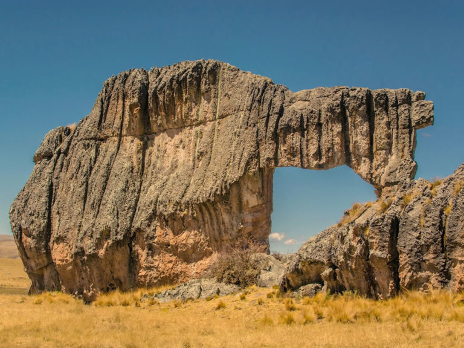
Bosque de Piedras de Huayllay
Un bosque geológico natural con enormes formaciones rocosas esculpidas por la erosión
durante millones de años. Algunas tienen forma de animales y figuras humanas. Es un lugar
ideal para caminatas y turismo de aventura en la sierra central.
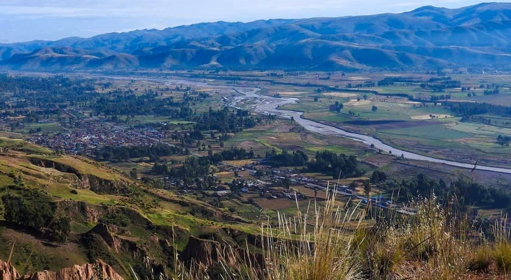
Valle del Mantaro
Este fértil valle andino combina tradición, paisajes y cultura viva. Abarca pueblos como
Concepción, Jauja y Huancayo, conocidos por su producción artesanal, gastronomía típica y
festividades como la tunantada. Es ideal para el turismo rural y cultural.
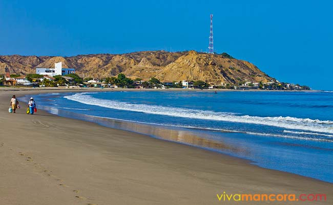
Playa Punta Sal
Ubicada en el extremo norte del Perú, es una de las playas más cálidas y tranquilas del país.
Sus aguas tibias, arenas blancas y cielo despejado la convierten en un paraíso perfecto para
descansar, practicar snorkel o disfrutar de un viaje en pareja o familia.
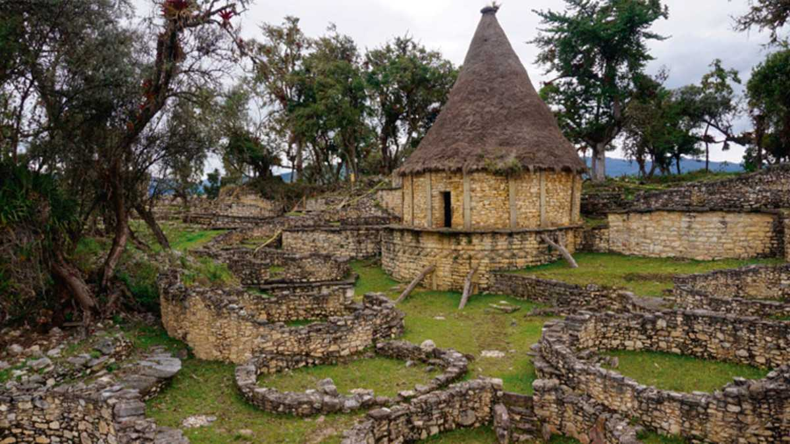
Fortaleza de Kuelap
Una impresionante ciudadela preincaica construida por la cultura Chachapoyas. Situada sobre
una montaña y rodeada de murallas de hasta 20 metros de alto, Kuelap sorprende por su
arquitectura monumental y su historia ancestral. Se accede en teleférico desde Nuevo Tingo.
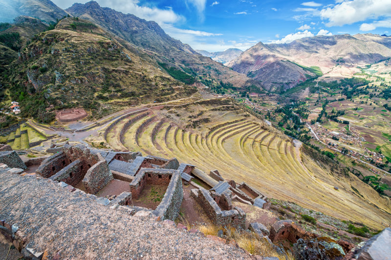
Valle Sagrado de los Incas
Hermosos pueblos andinos como Pisac y Ollantaytambo, rodeados de terrazas agrícolas, ríos y
montañas. Punto clave antes de visitar Machu Picchu.
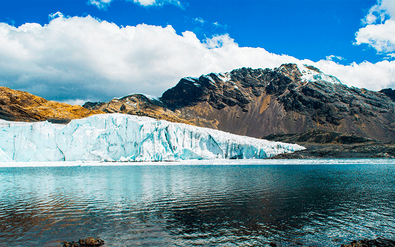
Nevado Pastoruri
Glaciar visitable del Parque Nacional Huascarán. Aunque en retroceso, aún se puede ver nieve,
puyas Raimondi y lagunas altoandinas.
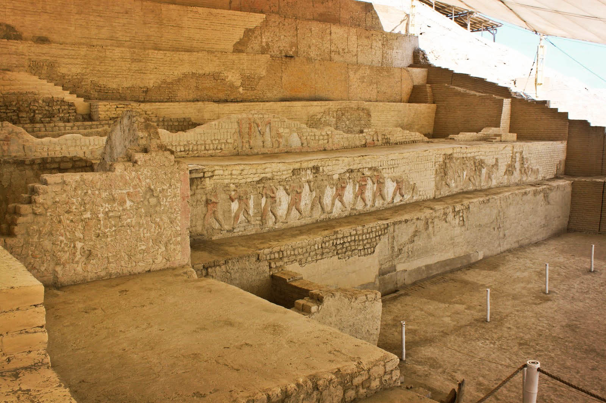
Complejo Arqueológico El Brujo
Ubicado en la región La Libertad, este centro ceremonial mochica destaca por sus huacas decoradas
con relieves coloridos. El hallazgo más importante es la Señora de Cao, una antigua gobernante momificada
con tatuajes visibles, que revela el poder de la mujer en la cultura prehispánica.